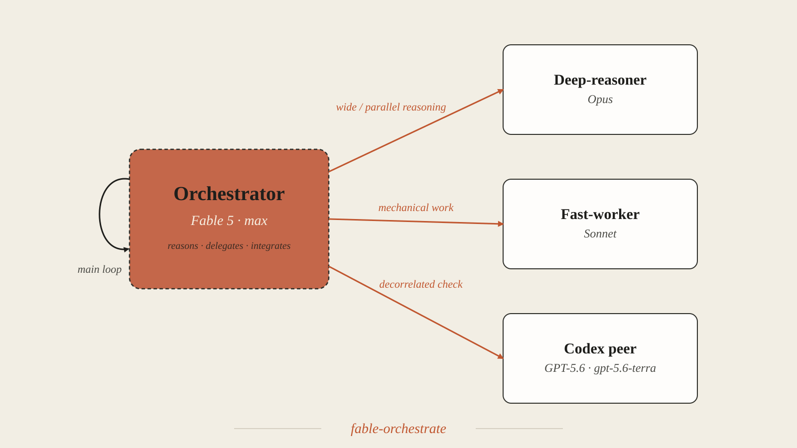
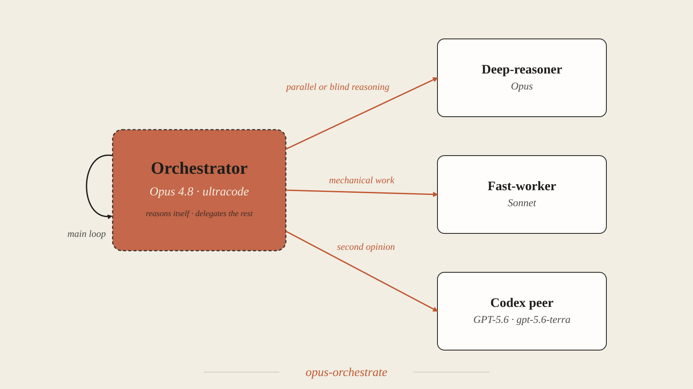
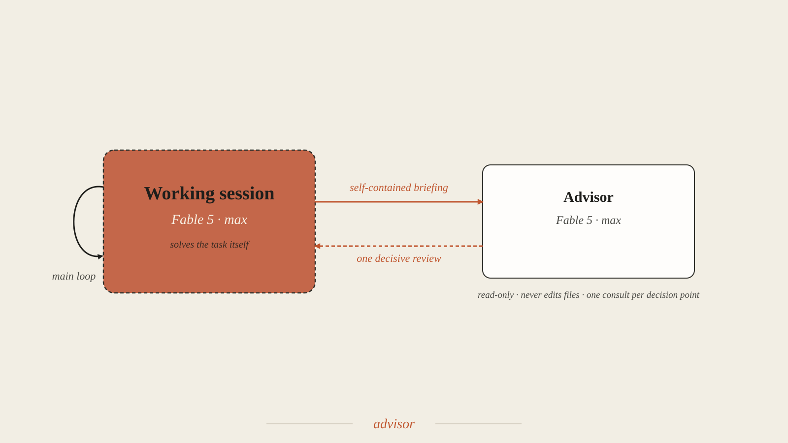
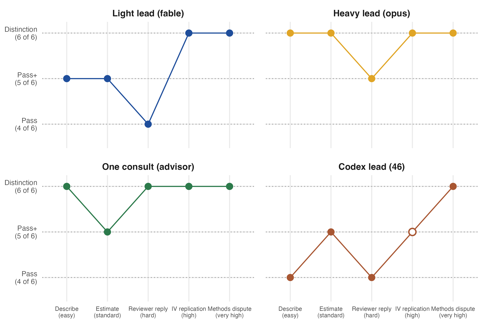
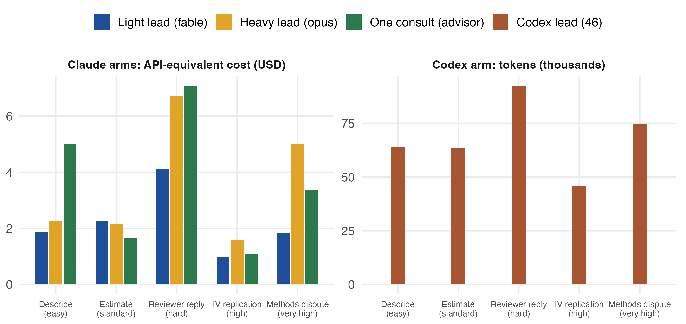
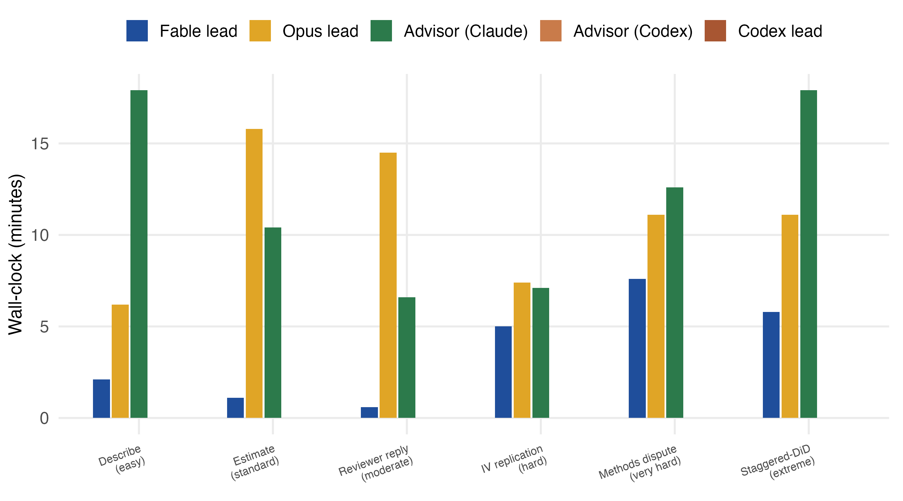

Three ways to use the models
Claude models trade speed and cost against reasoning depth. The strongest model is the scarcest resource. Running every step on it spends a large token budget on work a lighter model can do just as well. Orchestration splits one job so each part runs on the model that fits it. The task is to match model strength to step difficulty. You send routine, well-specified work to a lighter model and keep deep reasoning for the steps where it changes the answer. Context isolation matters as much as cost, because each delegate works in a clean context instead of one ever-growing transcript.
Anthropic's multi-agent guidance names the patterns this demo exercises. Parallelization fans out independent subtasks. Specialization sends each subtask to a focused agent. Escalation consults a more capable agent or model for a subset of complex subtasks. The three patterns below put these ideas to work.
Light lead fable-orchestrate

A fast model plans the work and routes each piece to the model that fits it. Reasoning goes to Opus and mechanical work to Sonnet, with a peer model for an outside check. The expensive model runs only on the steps routed to it, which makes this the cheapest way through hard work.
Heavy lead opus-orchestrate

Opus leads and reasons on the hard parts itself. It delegates only mechanical work, so the deepest thinking stays with one model and never gets compressed into a handoff. That costs more, because the expensive model runs throughout.
One consult advisor

Sometimes the right choice is a plain session. You solve the problem once, then send the finished work to a stronger model for one review where a second opinion can change the decision. The reviewer reads and comments only and never edits your files.
Which pattern you use depends on the work. For easy, computable tasks, the three arms reach the same answer, so you choose on cost and speed. For hard judgment calls, the arms differ in what they cost and what they catch. The runs below show that split.
The examples
Five briefs climb a ladder of difficulty. All use real, public data shipped with R packages, so anyone can re-run them with zero downloads.
The moderate rung is a community-choice conjoint, exampleData1 from the projoint R package, worked through three briefs. Describe (easy) documents the design and checks randomization balance. Estimate (standard) fits the AMCEs and plots them. Reviewer reply (hard) answers a referee who calls the headline crime finding an artifact of the AMCE baseline.
The high rung replicates and stress-tests a famous instrumental-variables result, Acemoglu, Johnson, and Robinson's colonial-origins finding. The 64-country sample ships with the ivdoctr package. The brief asks the arm to reproduce the headline, add controls, restrict the sample, and flag where the instrument fails. The very high rung adjudicates a methods dispute, Dehejia-Wahba versus Smith-Todd on whether propensity-score matching recovers the LaLonde experimental benchmark. The data come via causaldata. The brief asks the arm to compute the benchmark, run the specification curve, and decide which claim the evidence supports.
The three arms are used the same way on every brief. The orchestrators receive the brief verbatim in a fresh session. The advisor arm always runs the same three scripted steps, a plain solve, one consult, and a plain revise. Before any model ran, each brief got an executed reference solution and a written rubric, so grading never depends on what the runs happened to produce. Every run is committed with its logs and figures. The findings are in RESULTS.md.
How the runs are scored
Every brief is graded on six yes-or-no items from its pre-built rubric. Four are core items, the facts a competent run must get right, like reproducing the reference estimates or flagging a collapsed instrument. One is a judgment item, the call the analyst has to make, like noticing that two leading effects are a statistical tie. One is a completeness item, which gives credit for work beyond a correct answer, like reporting both the corrected and uncorrected magnitudes.
The bands follow from the items. Pass means every core item is met. Pass+ means core plus the judgment item. Distinction means all six. A run that misses any core item fails outright, whatever else it does well, because correctness cannot be traded for polish. Every brief uses the same four-one-one setup. That puts the three bands at the same heights on one shared axis, four, five, and six items of six. The dotted lines in the chart below mark them. Definitions and every run's item-by-item score are in SCORING.md.

What the runs cost and how they scored
Every number here comes from the committed run logs, scored against the answer keys.


| Mode | Describe (easy) | Estimate (standard) | Reviewer reply (hard) | IV replication (high) | Methods dispute (very high) |
|---|---|---|---|---|---|
Light lead fable |
Pass+$1.88 | Pass+$2.27 | Pass$4.13 | Distinction$1.00 | Distinction$1.83 |
Heavy lead opus |
Distinction$2.26 | Distinction$2.14 | Pass+$6.73 | Distinction$1.60 | Distinction$5.01 |
One consult advisor |
Distinction$4.99 | Pass+$1.65 | Distinction$7.08 | Distinction$1.09 | Distinction$3.36 |
Codex lead 46 |
Pass64k tokens | Pass+64k tokens | Pass92k tokens | Pass46k tokens | Distinction75k tokens |
Three patterns stand out. First, on the easy and standard briefs, the arms reach the same numbers. The differences are completeness details, like whether a report names the exact estimand behind its correction. There, you are choosing on cost and speed. The light lead finishes the easy brief in 3.4 minutes against the heavy lead's 9.9.
Second, the reviewer reply is the only brief that separates the Claude arms on quality. It stayed the only one even after two harder rungs joined the ladder. Every Claude arm hit Distinction on the IV replication and the methods dispute, and every one did it for less money than its own reviewer-reply run. Those tasks involve harder statistics, but they are canonical problems with settled answers in the literature. The reviewer reply demands an original judgment call. In these data, two leading effects are a statistical tie, and no publication settles that call for you. The arms differ less in how advanced the methods are than in where that judgment call sits. Spend tracks that ambiguity too. Every arm's most expensive run was the brief whose answer was least settled.
Third, the same band can rest on different amounts of checking. On the methods dispute, all three arms reached the same verdict, but their standard-error choices were not equally strong. The heavy lead reached the defensible choices unaided. The advisor arm's first pass fell into two subtle variance traps that its consult then caught and fixed. The light lead shipped defensible but second-best choices that nothing challenged, because its outside check never landed (below). A rubric on deliverables does not show that difference. The run logs do.
The practical rule stays simple. On computable work, spend the least. The cheapest arm reaches the same answer. Buy structure, a heavy lead or a consult, where the judgment is original to your data. The advisor consult repeatedly turned a good draft into the top band, because a reviewer that re-computes everything catches what a solo pass leaves implicit.
The fourth row is the Codex counterpart, 46-orchestrate with a gpt-5.6-terra lead, re-run on all five briefs on 2026-07-12 through the same rubrics. It is fast and lean on every brief, 3 to 5 minutes and 46k to 92k tokens, and it climbs the quality chart as the briefs get harder, ending with a Distinction on the methods dispute. Its numbers are reliable throughout; every AJR estimate is exact. What it drops are the same judgment sentences the light lead dropped: the statistical-tie caveat on the reviewer reply, and the two-sided ceiling on the IV replication (a collapsed instrument neither confirms nor overturns), where its memo stopped one sentence short of the band above. It stays out of the dollar chart because the Codex CLI reports tokens, not dollars, and token counts across vendors are not comparable.
Why the light lead trailed on the hard brief
On the reviewer reply, the two orchestration arms differ by exactly one rubric item. The heavy lead's memo flags that crime's razor-thin lead over commute time is a statistical tie, since their confidence intervals overlap. The light lead's memo calls crime the strongest predictor and never notes that the ~1.4pp gap is within the noise. That gap comes from the pipeline, not from the model. The light lead sent the sensitivity computation to an Opus deep-reasoner and had the Fable lead write the memo from the returned table. The statistical-tie judgment fell between the delegate that produced the numbers and the lead that wrote the prose. The heavy lead held the computation and the memo in one context, so it caught the tie and carried the caveat through.
This is a single draw at a tier where one sentence separates the bands. The rest of the ladder matters. The same light lead met all six rubric items on both harder rungs, at $1.00 and $1.83, the cheapest runs in their columns. The single best memo on the reviewer brief, the only Distinction there, came from the advisor arm, where Fable solved and a Fable consult reviewed. What trailed on this one draw was the handoff design, not the Fable model.
One process finding from the very-high rung matters. The light lead launched its cross-vendor peer review as a background task. The headless session ended before the verdict returned, so the check was lost. The deliverables were already final, and they were right. A run that had needed the peer's catch would have shipped without it. That argues for interactive sessions, or for protocols that wait, when the outside check is the point.
Run it yourself
First install Claude Code and the Open Science Skills plugin. You also need R with the packages the briefs use.
npm install -g @anthropic-ai/claude-code
claude plugin marketplace add scdenney/open-science-skills
claude plugin install oss@open-science-skills
Rscript -e 'install.packages(c("projoint","ivdoctr","AER","car","causaldata","MatchIt"))'For the headless Claude runs, keep ANTHROPIC_API_KEY unset. Otherwise, the API account is billed instead of your claude.ai login. One representative command per arm follows. Any brief slots in the same way.
# light lead (fable), headless
cd runs/fable/t1
env -u ANTHROPIC_API_KEY claude -p \
"/oss:fable-orchestrate $(cat ../../../prompts/t1-descriptive.md)" \
--output-format json > claude-envelope.json
# heavy lead (opus), interactive Opus session, see runs/opus/SESSION-PROTOCOL.md
# one consult (advisor), plain solve then one review then revise, see prompts/run.mdThe full protocol for every arm is in run.md.
Full scores, item-by-item evidence, and every run log are in RESULTS.md and SCORING.md. A Codex-side advisor arm is captured for the hard brief only, pending its own re-run.